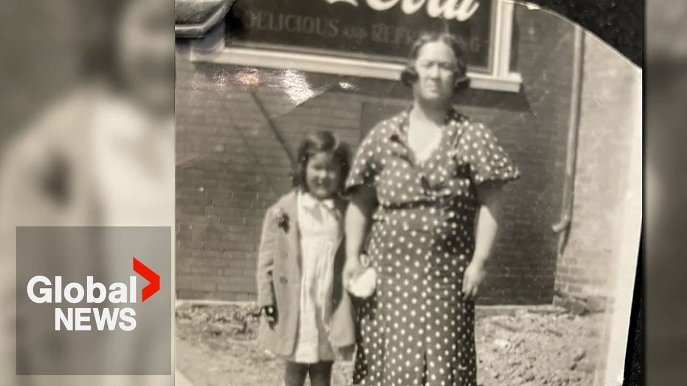

【一家中国洗衣店背后：艺术家纪念家族早期移民加拿大的坚韧】
Summary: The artist Brenda Joy Lim uses printmaking to explore her family's unspoken pain and their struggles with assimilation, discrimination, and labor hardships as early Chinese immigrants in Canada, including their laundry business and the impact of the Chinese Exclusion Act.
摘要： 艺术家Brenda Joy Lim通过版画探索家族未言的痛苦及作为早期华裔移民在加拿大的同化、歧视和劳工艰辛，包括他们的洗衣店生意和《排华法案》的影响。

⏱️ Estimated Reading Time: 4 min
I remember people saying to me, "Oh, you must really love your family because all your artwork is about your family."
我记得有人对我说：“哦，你一定很爱你的家人，因为你所有的作品都是关于他们的。”
But print making for Brenda Joy Lim.
但对Brenda Joy Lim来说，版画创作。
This one I would have had to print.
这一幅我本不得不印制。
Was at first a way to understand her family specifically why they carried an unspoken pain.
最初是为了理解她的家族，尤其是他们为何背负着无言的痛苦。
My parents' generation really didn't talk about their childhoods or yeah, they didn't.
我父母那一代真的不谈论他们的童年，是的，他们不谈。
It was sort of everything was about kind of trying to assimilate and adapt to living in I guess Canadian society.
某种程度上，一切都是关于试图同化并适应加拿大社会的生活。
Lamb's grandparents arrived in Canada in the early 1900s.
Lamb的祖父母于20世纪初抵达加拿大。
In those days, Chinese residents were heavily monitored and discrimination was institutional.
那时，华人居民受到严密监视，歧视是制度性的。
You're not allowed to like go in a swimming pool like if there's white people there, right?
你不被允许进入有白人的游泳池，对吧？
You don't swim with white people, right?
你不能和白人一起游泳，对吧？
You can't go into the theater.
你不能进剧院。
So, there was only specific work where you're allowed to do and because no one's going to hire you.
所以，你只能做特定的工作，因为没人会雇佣你。
You you could only kind of do your own business.
你只能自己做生意。
For the Lims, it was a hand laundry business believed to be the first Chinese-owned in Ashawa.
对Lim一家来说，这是一家手工洗衣店，据信是Ashawa第一家华人拥有的。
Between 1900 and 1950, many laundry operations were launched across the country thanks to the Chinese community.
1900至1950年间，得益于华人社区，许多洗衣店在全国开业。
Work days were brutal and stretched 18 hours.
工作日残酷且长达18小时。
It pushed workers to join together in 1906, forming Saiwa Tong, the Chinese Laundry Workers Union.
这促使工人们在1906年联合起来，成立了洗衣工人协会“西瓦堂”。
Their fight playing a pivotal role in the Canadian labor movement.
他们的斗争在加拿大劳工运动中发挥了关键作用。
So, here she is at the laundry.
于是，她来到了洗衣店。
But Lamb's grandfather left most of the work to his wife and kids, remembered by them as an alcoholic and abusive at times.
但Lamb的祖父将大部分工作留给妻儿，他们记忆中他酗酒且时有暴力。
He's so young when he came here.
他来的时候非常年轻。
He's thrown into like an environment where there's just these bachelor guys that are, you know, teaching him how to run a laundry.
他被扔进一个只有单身汉的环境，那些人教他如何经营洗衣店。
So, I don't think there was any role models.
所以，我认为没有任何榜样。
During this period, bringing additional family members over was impeded by Canada's Chinese Exclusion Act.
这一时期，加拿大《排华法案》阻碍了更多家庭成员团聚。
My father would describe every night sitting down to dinner and having a chorus of kids singing anti-Chinese ver chanting outside their the the laundry.
我父亲会描述每晚坐下吃饭时，一群孩子在外面高唱反华口号。
While the Lem's laundry building is now long gone, its images are in this public art gallery's permanent collection.
尽管Lem家的洗衣店建筑早已消失，其影像仍在这家公共艺术画廊的永久收藏中。
We need to be able to tell all of Ashawa's history.
我们需要能够讲述Ashawa的全部历史。
We live in a society that really certain cultural groups our stories are erased or simplified.
我们生活在一个某些文化群体的故事被抹去或简化的社会。
Lamb's father would go on to fight in the Second World War.
Lamb的父亲后来参加了第二次世界大战。
If you were to write down the things that were really painful and hard, it would tell a lot more about who you are, right?
如果你写下那些真正痛苦艰难的事，它会更多地揭示你是谁，对吧？
And and what you're made of.
以及你的本质。
Germaine Ma Global News.
Germaine Ma，环球新闻。